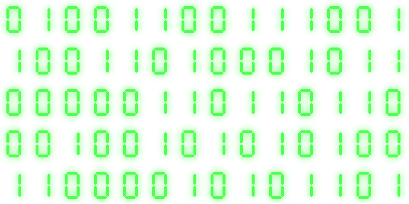
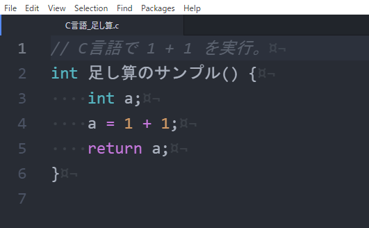
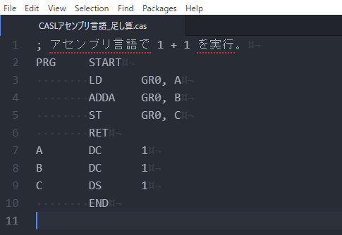
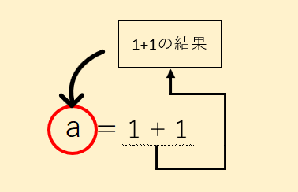
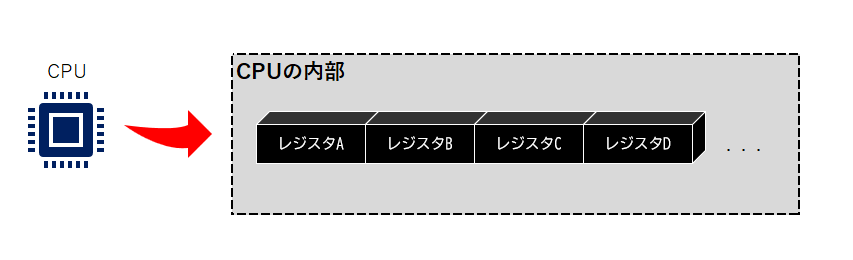
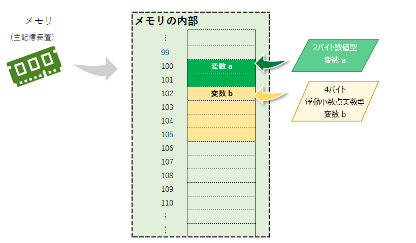

計算式の答えはどこへ行く？
さて今回は計算をコンピュータにやってもらいます。
まず我々が使っている数字は 0 ～ 9 までの10個の数字で構成される10進数と呼ばれるものです。0 とか 10 とか 99 とか 1000000 とかですね。
一般的に10進数とは会話などでは使わないと思いますが、難しく考えずに言うといわゆる数字です。
しかしこの数字はコンピュータにとって分かりやすい数字とは言えません。これまでの記事でも説明した通り、コンピュータが読める数字は2進数のみです。
|  |
もちろん計算式では「1＋1」のような数字以外にも足すという情報がありますよね。これを2進数しか読めないコンピュータに教えるにはどうするのでしょうか？
これは 前回の記事 でお話したアセンブラにヒントが隠れています。
「1＋1」をしようと思った場合、コンピュータに「1＋1」と投げて 2 と教えてもらうには色々と手続きが必要になります。
「そんなもん人間が一瞬で計算できるのになんでコンピュータはそんな事もすぐできないの？」と思ったらダメです。それがコンピュータです。
不便だねぇと思っている方々。ちょっと屁理屈を言って申し訳ないが、「41866÷837.32」のような計算は一瞬でできますか？
答えは 50 なのですが、コンピュータは手続きさえ前もってしておけば一瞬で計算できます。コンピュータにとっては「1＋1」も「41866÷837.32」もほぼ同じです。
ほぼ同じと言ってしまうとちょっとまた異論が飛び交うのですが、人間から見て、の話です。分かりやすくいうとミリ秒単位の差しか出ません。ミリ秒なんてものは人間にとっては大した時間ではないと思います。
はい。話が脱線事故しております～^^
それでは少し分かりやすい説明をするために、例えば割とメジャーなC言語とアセンブリ言語とで「1＋1」のプログラムコードを比較してみましょう。
|  |  |
左がC言語、右がCASLというアセンブリ言語です。
上記が実際のプログラムコードでこれらを機械語に変換して、コンピュータが答えを返してくれるようになります。
「1＋1」でもこれだけ色々書かないといけません。大変ですね。右のCASLのコードは何をやっているか分からない方がほとんどかと思います。
上記のCASLのコードを眺めてみましょう。
「ADDA」と書いてある部分が見えるかと思いますが、これは追加する意味の "add" と、算術 "arithmetic" の "a" です。
ADDAの後に「GR0, B」と書いてありますが、これがADDAと相まって「GR0 + B」という事になっているように見えます。
GR0、Bは何を意味しているの？という疑問が残りますが、まずはADDAという「命令」が足し算を担っているものである事が分かると思います。
次はC言語のコードです。
「a = 1 + 1」が書いてあります。これはすぐ分かりそうですね。
a というアルファベットは何でしょうか？a と 1 + 1が同等である？みたいな恰好でコードが書かれていますが、これは代入文と言います。
代入文は、そのまま代入する文の事です。文には色々な形態がありますが、C言語の場合ですと [結果を保持したい要素] = [四則演算などの計算式] となっています。
1 + 1の計算結果を a に代入する、という意味になります。
|  |
C言語も元をたどればアセンブリ言語なので、実質アセンブリ言語も a のような値を代入するスペース (場所) があるはずです。
そこで一旦、CASLのコードに戻ってみましょう。
CASLのコードにも A B C と書かれたものがある事に気付きます。これらが値を保持するスペースです。
「A DC 1」となっていますが、DC は固定された数を意味していて、A というスペースに固定値 1 を入れるという意味になります。
つまり A や B が値を入れる定義です。GR0 についてはレジスタと呼ばれるもので、コンピュータが独自に保持している計算用の値管理スペースです。
そこまで分かったところで上記のアセンブリ言語などから、"ADDA"などの単語があると思いますが、これを更に2進数として定義していく事になります。
つまり「ADDA GR0, B」であれば、レジスタGR0 に B の値を ADDA (加算) する、と言った形の2進数を定義します。
5とか10とかであれば、2進数にすると[101]、[1010]などになりますが、ADDAなどの命令も2進数に変換します。それは実際にどんな2進数になるのかは分からないのですが 111010010… みたいな数値であるはずです。
コンピュータが2進数しか読めないので、「加算する」などの情報も2進数として定義してやる必要があります。
「じゃあADDAは実際の機械語でどういう2進数になるの？」とお思いかもしれません。しかし残念ながら筆者である私が機械語について詳しくない上に、ここでどうしても説明できない理由があるのです。
それは、CPUの種類によって機械語が異なるという点があるという事と、分解・解析(Reverse Engineering/RE)した結果の情報を垂れるのは権利の問題が発生する点です。
もちろんそれはWindowsで普遍的に使えるCPUなどは互換性があるので、Windows 2000で作ったものが未だにWindows 10で使えるという話になっているだけです。実際には大昔のCPUなどでは一切動きません。
CPUによって機械語が違う理由についてはあまり多くは語りませんが、例えば昔使っていた洗濯板で今の時代洗濯をしますか？というぐらいの理由です。仕組みが違うものは互換性がありませんので^^;
ここまでの話を総合して考えると、コンピュータが計算する時はあらゆるデータを保管する仕組みなどを利用しているという事です。
数字を保管しておくための定義 (aなど) を「変数」(variable) と言います。
定義した変数に値をセットする作業を「代入」(assignment) と言います。
「=」や「+」等の記号は「演算子」(operator) と言います。数学の世界ではこれを数学記号と言います。
このように変数に値を代入するなどの定義を一般的に「文」(statement) (または式 (expression)) と言います。文と式については厳密な区分はあいまいで、言語によって単語の意味は異なっています。
色々単語が出てきますが最後、これらの構文で構成される処理を「サブルーチン」(subroutine)、
「手続き」(procedure)、「関数」(function) などと呼びます。これも言語によって呼び方は様々です。
変数（variable）とは - IT用語辞典 e-Words（別ウインドウで開きます）
このようにコンピュータの内部で計算処理を行う時は、変数やレジスタと言った入れ物を使います。
これは大切なのでよく覚えておきましょう。
リバース・エンジニアリングとは何ですか？ |
|
|
リバース・エンジニアリングは、完成した製品などを分解して中身を解析する作業などを言います。逆アセンブルなどとも言います。 |
レジスタと変数の違い
さっきから言ってるレジスタって何なのさ？という事で、レジスタと変数について解説したいと思います。
まずはレジスタについて。
|  |
コンピュータの頭脳とも言える「CPU」の中にレジスタがあります。
レジスタとは、CPU自身が演算処理を行う際に使う記憶装置です。変数との違いとしてはデータにアクセスできる速度です。
プログラムから自由にアクセスできるレジスタ「汎用レジスタ」と、プログラムからアクセスできないCPU処理専用のレジスタ「専用レジスタ」があり、アセンブラでは特にレジスタの特徴を知る必要があります。
専用レジスタの種類 (一部)
- アキュムレータ (A) ・・・ CPUの計算結果を保管するレジスタ。
- プログラムカウンタ (PC) ・・・ 実行する命令が格納されているメモリアドレスの場所を保管するレジスタ。サブルーチン呼び出しなどができます。
- スタックポインタ (SP) ・・・ スタックと呼ばれる仕組みでアドレスの場所を保管するレジスタ。プログラムカウンタなどと併用される事が多いです。
- インデックスレジスタ (IX) ・・・ 配列と呼ばれるメモリ管理の仕組みで使用されるレジスタ。
他にも様々なレジスタがあり、汎用レジスタは用途が決まっておらず「GR0」「GR1」「GR2」・・・という名前である事が多いです。
次は変数です。
|  |
変数はレジスタと違って、場所を確保しないと使う事はできません。逆に言うと定義さえしてしまえばメモリ領域が尽きるまでいくつでも使う事ができます。
また確保した変数は別の変数に故意に上書きされたりはしません。しかしそれは、メモリアドレス上に作った変数を意図的に消さないとメモリ領域がどんどん食い潰されていってしまうという事です。
変数は取り扱いの制限がレジスタに比べて緩い事に対して、メモリ領域の管理を徹底する必要があり、
レジスタは変数のように自由に定義して使用するには制限が多いが、CPU内部機関なのでアクセス速度が高速という特徴があります。
コラム：メモリアドレスいっぱいに変数を配置したらどうなる・・・？ |
|
|
コンピュータは頭脳であるCPUで計算を行いますが、その計算を行うために様々な情報をデータとして保持しなければなりません。 |